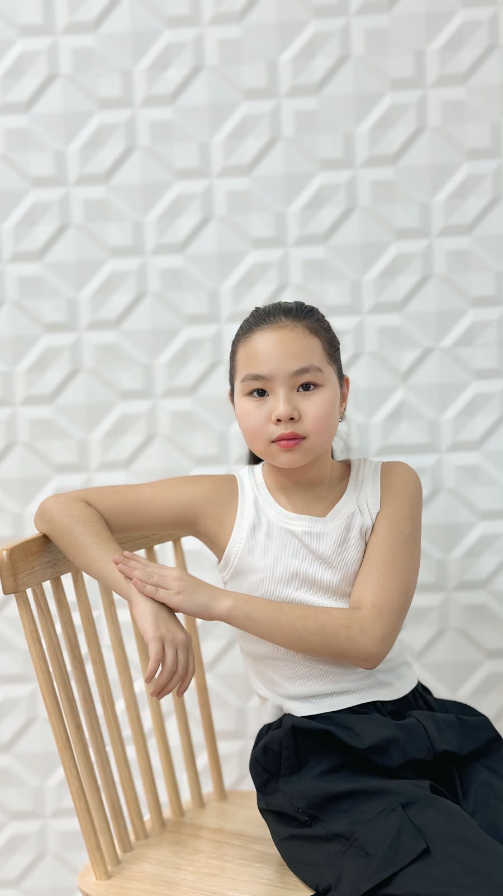

Привет! Я Айару.
Мне 12 лет, я живу в Алматы. С самого детства моё сердце принадлежит сцене, музыке и кино. Я легко перевоплощаюсь в самые разные образы — от драматических глубоких персонажей до ярких, жизнерадостных комедийных героинь.
Я пою сольно и на большой сцене, играю на четырёх музыкальных инструментах: домбыре, фортепиано, гитаре и укулеле. Профессионально занимаюсь вокалом и актёрским мастерством, побеждала в республиканских и международных конкурсах, завоевав множество кубков Гран-при.
Свободно говорю на казахском и русском языках, углубленно изучаю английский язык. Всегда открыта к интересным съёмкам в фильмах, сериалах, клипах и рекламных кампаниях!
ИмяАбдолла Айару
Дата рождения30 июля 2014
Возраст12 лет
Рост157 см
ГородАлматы, Казахстан
ЯзыкиКазахский (родной) · Русский (свободно) · Английский
ИнструментыДомбыра · Фортепиано · Гитара · Укулеле
Хобби и увлечения
- Вокал
- Домбыра
- Фортепиано
- Гитара
- Укулеле
- Рисование
- Оригами
- Поделки из бумаги
- Иностранные языки
Курсы и подготовка
- Актёрское мастерство
- Вокал
- Домбыра
- Фортепиано
- Английский язык
- Математика
